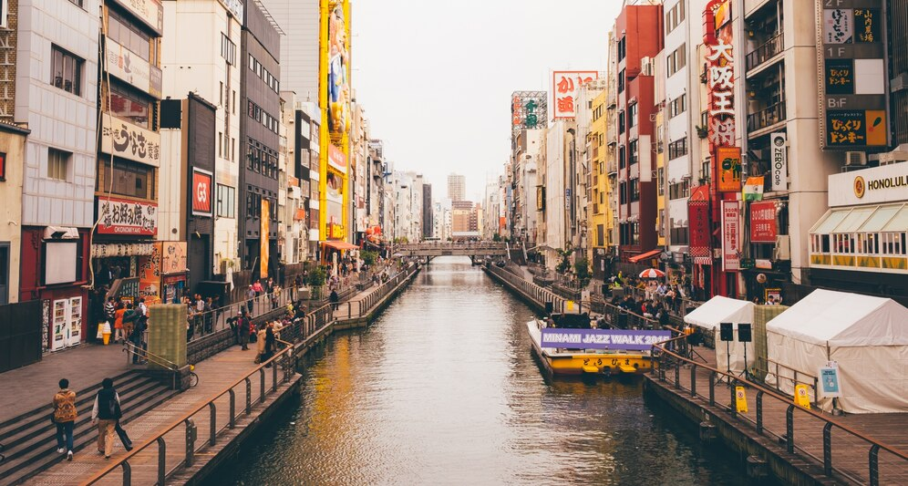

TOP VENTAS
Osaka
Siendo la tercera ciudad más poblada de Japón, también es una de las más visitadas. Es divertida y se come genial. Hay lugares que no nos podemos perder como Universal Studios Japón
Kyoto

Kyoto no pasa desapercibida. Su historia nos llama a querer visitarla y conocerla. ¿Cómo perderte una de las ciudades más tradicionales de Japón?
Tokyo

Visitar esta ciudad es imprescindible. No solo es la capital del país, sino también de las compras, las luces, la noche. Todo en ella es superlativo.
OTROS DESTINOS
Yokohama
Yokohama es la segunda ciudad más grande de Japón, ideal para una excursión de un día (o más) si te alojas en Tokyo.
Cosas que hacer en Yokohama
La zona de Minato Mirai 21, en el centro de Yokohama, al lado del parque Yamashita. Landmark Tower, Cosmo World, Nippon Maru, CupNoodle Museum, Akarenga, los almacenes de ladrillo rojo, el muelle Osanbashi

Kobe
Si bien Kobe no es una de las ciudades más tenidas en cuenta para viajar a Japón, nosotros la recomendamos encarecidamente. Un día basta para explorar lo principal, aunque todo varía depende de tu gusto.
Cosas que ver en Kobe
En Kobe encontrarás el Santuario de Sannomiya, Parque Meriken, el barrio chino Nankinmachi o el museo marítimo de Kobe.

Fukuoka
Fukuoka está a unas 5h y media de Tokyo, un trayecto incluído en el JR Pass.
Cosas que ver en Fukuoka
El templo Shofukuji (el primer templo budista zen de Japón), el castillo de Fukuoka, rodeado por el parque Maizuru. Canal City Hakata, un gran centro comercial lleno de tiendas. Barrio Nakasu, Dazaifu, entre otros rincones.

Hiroshima
La cultura general nos hace conocer Hiroshima por la catastrofe del 6 de agosto de 1945, pero nosotros vamos a hablarte de otros puntos que ver en esta ciudad además de los emblemáticos.
Cosas que ver en Hiroshima
El Parque de la Paz, zona donde cayó la bomba, destacando la Cúpula de la Bomba Atómica. El Cenotafio para las víctimas, la llama de la Paz y el reloj parado a las 8:15.
Además encontrarás el castillo de Hiroshima, los jardines Shukkeien y el Museo Mazda
 .
.
Sapporo
Sapporo es la capital de Hokkaido, quinta mayor ciudad de Japón. Es una ciudad relativamente moderna que se suele quedar fuera de los itinerarios cuando se planean viajes a Japón. Aquí te decimos por qué en tu viaje no puede faltar.
Cosas que hacer en Sapporo
El festival de nieve, se celebra en el Parque Odori, la zona de Susukino y la zona de Tsu-dome. T38 Observation Deck, un enorme rascacielos en el que encontrarás un precioso mirador. Tokeidai: Torre del reloj, Jardines Botánicos de Sapporo, Mercado Nijo o la Calle comercial Tanuki-koji

AEROPUERTOS
Debemos saber que Japón cuenta con cuatro aeropuertos principales: Narita, Haneda, Osaka y Nagoya. Sin embargo son solo Narita y Haneda los que ofrecen la gran mayoría de vuelos internacionales a larga distancia.
Estos últimos son los más recomendables para comenzar tu viaje a Japón desde Tokyo.
Algunos datos importantes son los siguientes.
Solo el aeropuerto de Haneda está está en la prefectura vecina de Tokio, Chiba.
Los dos tienen tres terminales.
JAL y ANA, las dos principales aerolíneas de Japón, operan desde ambos aeropuertos.
Uno de los factores principales para elegir entre uno y otro, es el número de aerolíneas que trabajan con cada uno de los aeropuertos ya que pueden darnos mejores precios o tiempos entre vuelos, sin embargo, es importante tener en cuenta lo que nos saldrá tener que ir hasta el centro de Tokio.
Claramente es más rápido llegar a Tokio desde Haneda, sin embargo, ambos tienen opciones disponibles de autobús, tren, alquiler de coches…
¡No te preocupes! Nosotros elegiremos el mejor aeropuerto para tu viaje.
HOTELES
 ¡Hoteles 3 estrellas!
¡Hoteles 3 estrellas!
 ¡Bien comunicados!
¡Bien comunicados!
 Disfruta de los mejores precios
Disfruta de los mejores precios

OTROS
- Documentación
- Inmigración y aduanas
- Tax Free
- Registro de viajeros
- Seguro de viaje
- Conducir en Japón
- JR Pass
- ESIM de datos
- Welcome Suica
- Experiencias únicas
Como ves hay muchas cosas que hacer antes de tu viaje a Japón. Pero no tienes que preocuparte.
Nosotros estaremos encantados de ayudarte en el proceso.
Mándanos un mensaje con todas tus dudas.